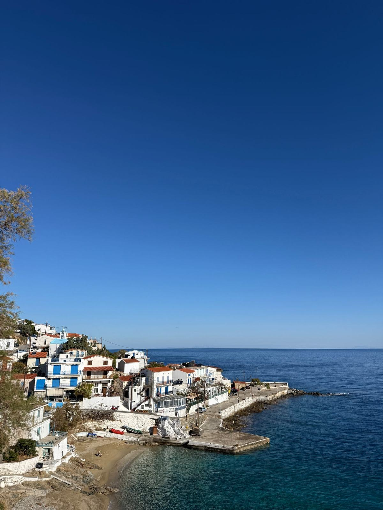
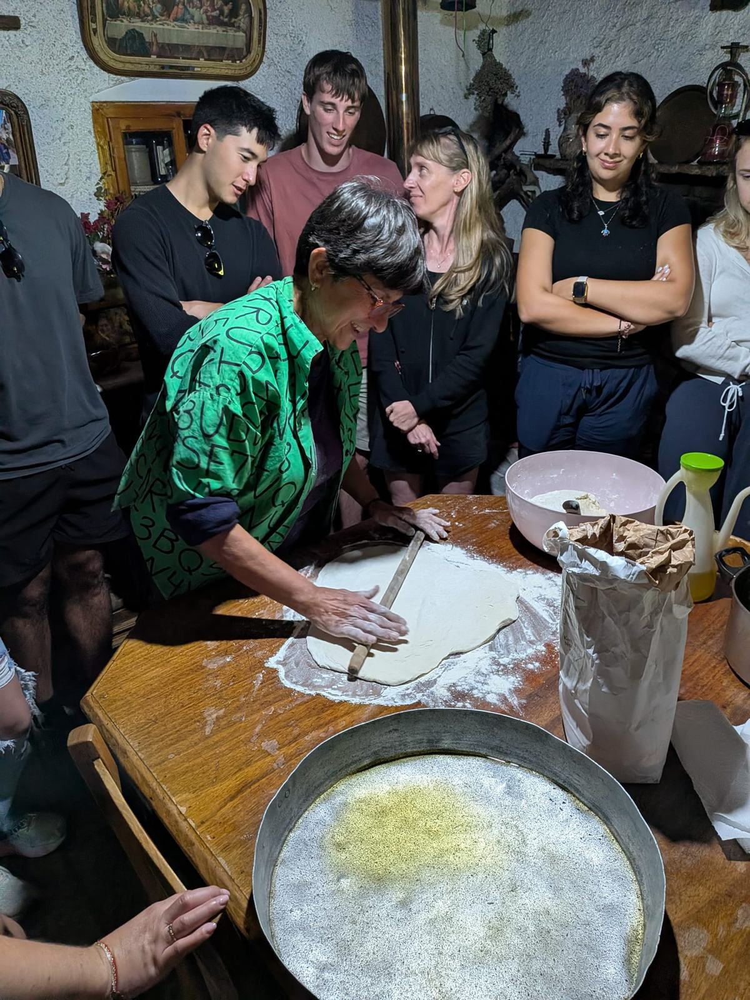
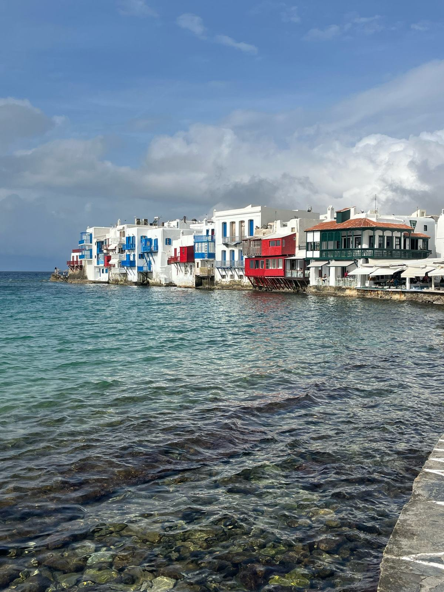
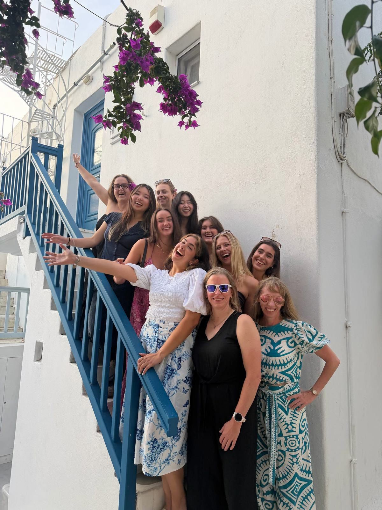
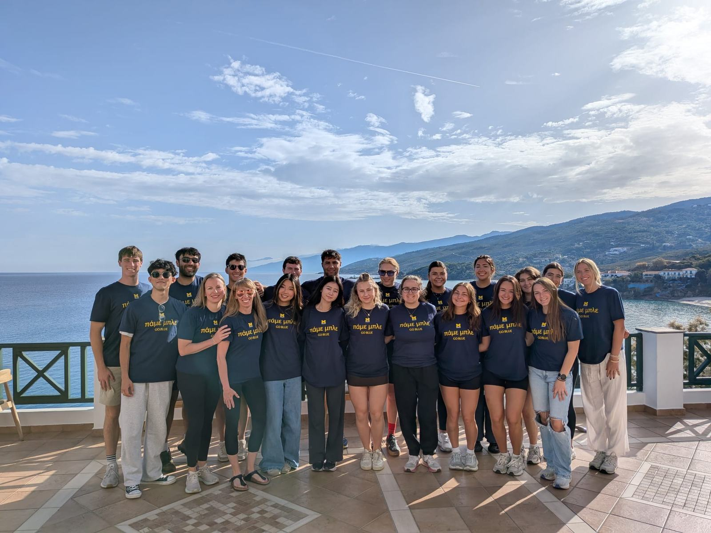

Six days, a different perspective.
I don't want to spend so much of my life preparing for the future that I forget to enjoy the present.
Before visiting Ikaria, I primarily associated longevity with physical health: eating a balanced diet, exercising regularly, and preventing disease. While these factors are undoubtedly important, my time on the island challenged me to think more broadly about what it means to live a long and fulfilling life.
Being busy isn't the same as being rushed.
Throughout the trip, I noticed how many aspects of healthy living seemed to be incorporated into people's everyday routines. Physical activity happened while maintaining hiking trails, tending to gardens, or navigating the steep terrain around their homes. Social interaction happened through preparing meals, sharing food, dancing, and participating in community activities. These weren't necessarily things people had to make extra time for. They were simply part of their daily lives.
What stood out to me most, however, was the difference in how people seemed to approach their responsibilities. Many of the people we met held multiple jobs and had plenty to do, yet their interactions with us rarely felt hurried. Of course, I recognize that we were visitors and only saw a small part of their lives. I can't assume they experienced less stress than people in the United States, but it made me realize how often I associate being busy with feeling rushed.


The contrast became clearer afterward.
I didn't fully appreciate this difference until we left Ikaria and continued our travels through Mykonos and Athens. Returning to busier, more commercialized environments made me realize how much I had enjoyed the slower pace of our days on the island. I missed spending time outdoors, preparing meals together, and having conversations without constantly thinking about what needed to happen next.
Ambition and being present can coexist.
As a college student preparing to graduate and pursue a career in medicine, I often find myself focused on the next milestone. Whether it's finishing my degree, gaining more clinical experience, applying to medical school, or eventually becoming a physician, there always seems to be another goal to work toward. While I'm excited about these opportunities, I've also noticed how easy it is to become so focused on preparing for the future that I forget to appreciate where I am right now.
I frequently tell myself that I'll have more time to relax, spend time with friends, or enjoy my hobbies once I've finished everything on my to-do list. But realistically, there will always be another responsibility waiting. Even after graduation, medical school and a career in healthcare will come with their own demands. If I continue waiting for a less busy period of my life to prioritize my well-being, I might find myself waiting indefinitely.
This was probably the biggest realization I had during the trip. I don't necessarily need fewer responsibilities or less ambition to enjoy life more. Instead, I need to reconsider how I approach those responsibilities and make sure that pursuing my goals doesn't come at the expense of everything else that makes life meaningful.

Small changes, lasting perspective.
Moving forward, I want to make a conscious effort to incorporate some of the habits I appreciated in Ikaria into my own life. I want to spend more time going on walks with friends, preparing meals and eating together rather than rushing through them, and appreciating the things I already have instead of constantly focusing on what comes next. I also want to practice slowing down mentally, even when my schedule is busy, and being more present when spending time with others.
I recognize that the lifestyle we experienced in Ikaria isn't necessarily representative of everyone's daily reality on the island. Our nursing home visit also reminded me that longevity doesn't guarantee good health or independence, and that aging comes with challenges regardless of where someone lives. Still, I think there is value in reflecting on the habits and priorities we observed without assuming that Ikaria has everything figured out.
Ultimately, I don't expect to recreate the Ikarian lifestyle back home. My responsibilities, environment, and routines are different, and I know that maintaining a slower pace will be challenging at times. I still want to work hard, pursue medicine, and accomplish the goals I've set for myself. But I also want to make sure that I enjoy the process of getting there.
I don't want to spend so much of my life preparing for the future that I forget to enjoy the present.Revisit the journal ↗
